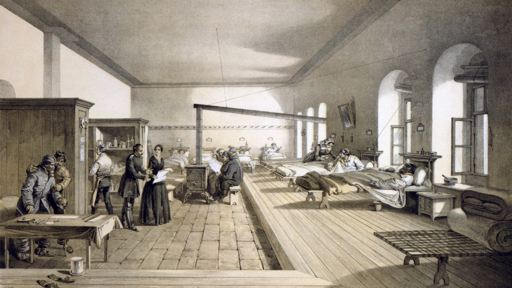
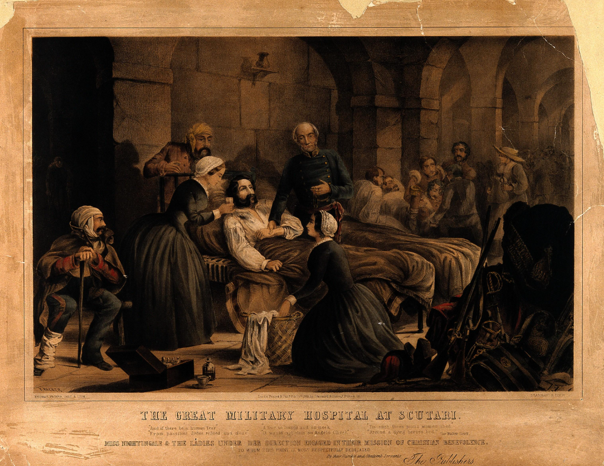

THE SORTING INVESTIGATION
"An investigation is waiting at Scutari Hospital."
November 1854. You arrive at the British military hospital in Scutari during the Crimean War. Piles of handwritten hospital records are completely unorganised. Help sort and organise the medical evidence to reveal patterns that support vital hospital reforms.

Your Investigation Roadmap
One investigation, five connected stages. Each stage reuses the ideas from the one before it.
The Scutari Inquiry
First, understand why the records mattered. The historical story sets the problem that every later activity will solve.

Scene Title
Scene narrative text.
The Scutari Hospital Ledgers
These five illustrative learning records are based on the need to organise hospital tallies. Compare two values: noticing order is the first step before visualising how algorithms create it.
🔍 Investigator's Observation
These admission numbers arrive in random order: [42, 19, 85, 64, 128]. To determine which ward has the lowest or highest patient load, doctors had to waste precious time scanning back and forth through parchment. Let's discover how sorting solves this immediately!
This is the physical version of the comparisons you will watch in the algorithm visualizer. Only neighbouring records may cross.
Watch the Algorithm Think
You have already ordered records by hand. Now watch each algorithm make one meaningful decision at a time. At the end, apply the idea in a short check before continuing.
Bubble Sort
Simple Pairwise BaselineComplexity & key terms
- Key
- The value currently being held and moved into place in Insertion Sort. This is different from Python's
key=function. - Run
- A section that is already ordered in the requested direction.
- Minrun
- The minimum run length the Timsort teaching model extends to before merging.
- Merge
- Combine two ordered sections into one ordered section.
- Auxiliary buffer
- Extra temporary space used while merging.
- Stable
- Equal values keep their original arrival order.
- Divide and conquer
- Split a problem into smaller parts, solve each, then combine.
Step data (optional)
Why? Step details & symbol key
Data & settings
About these teaching models
These animations use illustrative ward records to show how values compare and move. They are visual learning models, not Python's internal sorted() implementation. The Timsort tab is a simplified model of natural runs, short-run extension and merging; CPython also uses minrun sizing, a run stack and galloping optimizations.
Mastering Python's sorted()
You now know what sorting operations do. Next, see how Python expresses the same ordered result in one line. Explore each control and compare the new list with the untouched original.
⬆ Default: Ascending Order
When you call sorted(my_list), Python orders values from smallest to largest.
# List of patient arrivals
numbers = [23, 8, 41, 15, 3]
result = sorted(numbers)
print(result)
# Output: [3, 8, 15, 23, 41]⬇ Descending with reverse=True
Pass the argument reverse=True to order values from largest to smallest.
# Urgent cases first
numbers = [23, 8, 41, 15, 3]
result = sorted(numbers, reverse=True)
print(result)
# Output: [41, 23, 15, 8, 3]🛡️ Crucial Principle: Original Data is Never Modified!
sorted() does NOT change the original list. As a careful clerk might keep an original ledger intact while preparing a fresh sorted copy, Python creates and returns an entirely new list, leaving your original records completely intact.
Live Visual Pipeline
Stable Sorting: Equal Keys Keep Their Arrival Order
Test Your Python Sorting Knowledge
Play with your understanding: first apply the operations you watched, then check the Python ideas from the previous screen. Feedback explains the misconception in each wrong answer so you can retry.
All hospital numbers in these questions are illustrative practice data, not historical records.
days = [14, 3, 28, 7]
print(sorted(days))Fill in the missing argument inside the parentheses:
result = sorted(counts, )
records = [50, 10, 30]
sorted_records = sorted(records)wards = ["ICU", "Triage", "Surgical Ward"] shortest_first = sorted(wards,______)
patients value from each ward record for sorting?
sorted() and list.sort()?
This code runs directly on your local Python server. Try editing the list or test different sorting arguments!
The Scutari Barracks Emergency
You have visualized the operations, practised them in Python and played the checks. Now combine them: choose a priority order, verify it with Python and explain your decision.
Illustrative scenario inspired by hospital supply planning. The ward deficit numbers below are fictional practice data, not a historical record.
Step 1: Choose the Priority Strategy
The illustrative blanket deficits across 5 wards are: Ward A (38), Ward B (112), Ward C (15), Ward D (75), Ward E (94). Which sorting order should be applied so that the wards in greatest danger receive emergency supplies first?
Press Play or Next to begin.